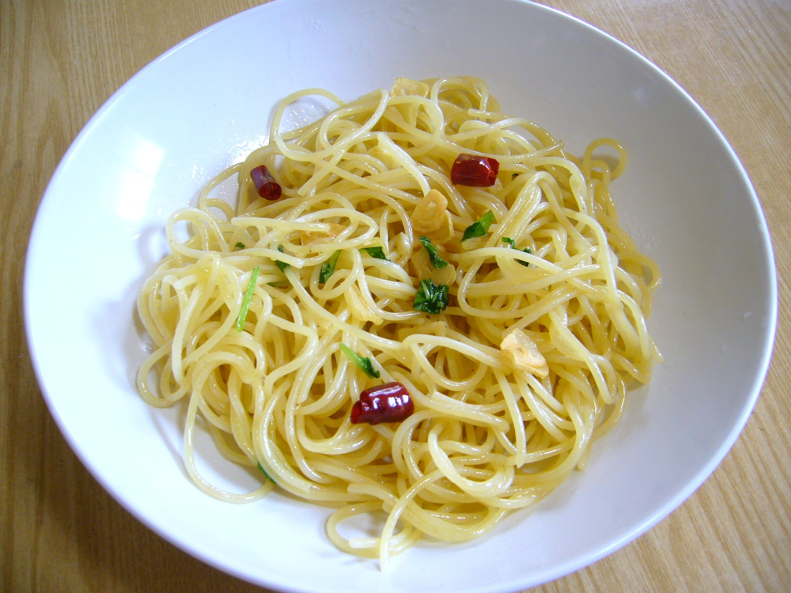

Spaghetti Aglio e Olio

Description
Spaghetti Aglio e Olio is a classic Italian pasta dish made with garlic,
olive oil, and spaghetti.
It's simple, delicious, and perfect for a quick homemade meal.
Ingredients
- 1 pound uncooked spaghetti
- 6 cloves garlic, thinly sliced
- ½ cup olive oil
- ¼ teaspoon red pepper flakes, or to taste
- Salt and freshly ground black pepper to taste
- ¼ cup chopped fresh Italian parsley
- 1 cup finely grated Parmigiano-Reggiano cheese
Steps
- Bring a large pot of lightly salted water to a boil.
- Cook the spaghetti in the boiling water, stirring occasionally, until tender but still firm to the bite, approximately 12 minutes. Drain and transfer to a pasta bowl.
- Combine the garlic and olive oil in a cold skillet.
- Cook over medium heat to slowly toast the garlic for approximately 10 minutes.
- Reduce the heat to medium-low when the olive oil begins to bubble. Continue cooking and stirring until the garlic turns golden brown, approximately another 5 minutes. Remove from heat.
- Add the red pepper flakes, salt, and black pepper to the cooked spaghetti.
- Pour the garlic and olive oil mixture over the pasta.
- Add the chopped Italian parsley and half of the grated Parmigiano-Reggiano cheese. Stir until everything is well combined.
- Serve the pasta topped with the remaining Parmigiano-Reggiano cheese.
Home